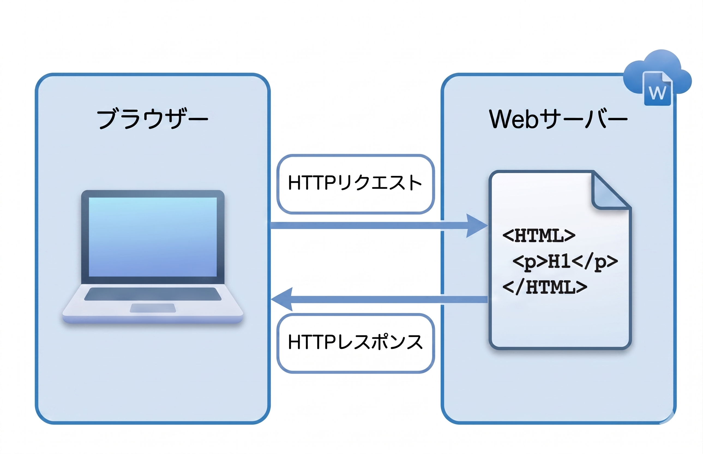
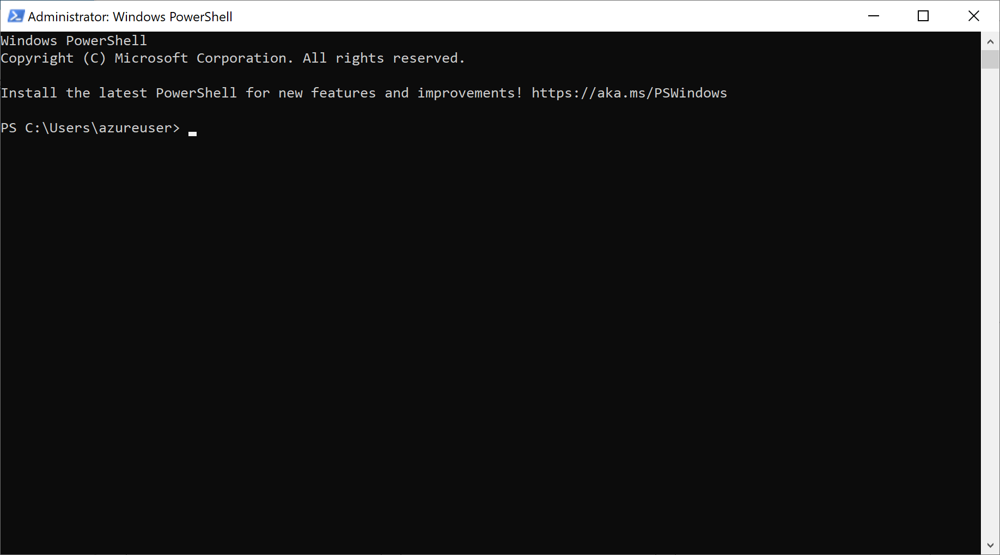
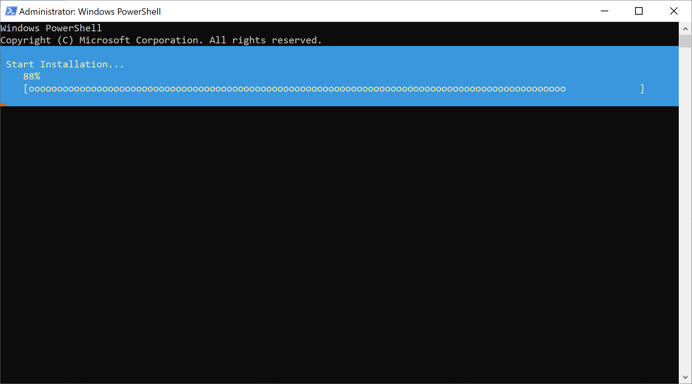
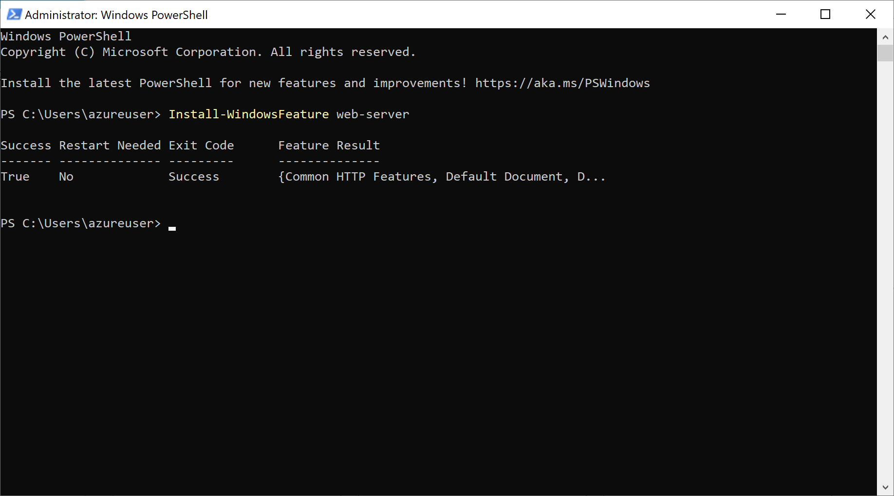
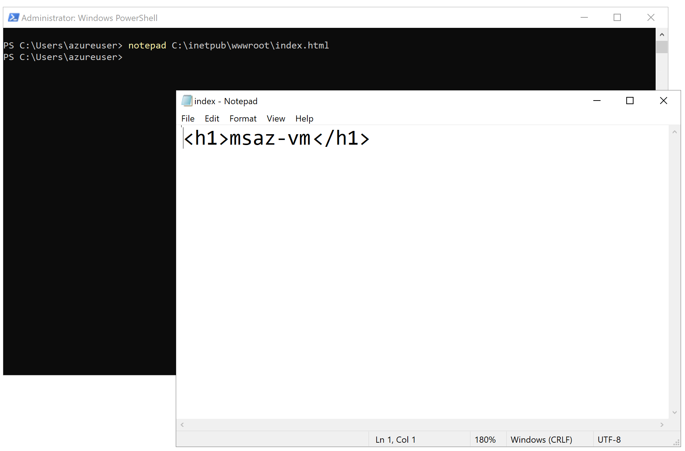

Azure ポータルで 仮想マシンにIISをセットアップする
適用対象: ✔️ 仮想マシン
この演習では、Azure ポータルを使用して 仮想マシン2台に IISをセットアップします。
所要時間: 約 10 分
先行の演習
この演習を始める前に 仮想マシンを作成する（Windows 可用性セット） を完了してください。
IIS
IIS（Internet Information Services）は、Windows 用の Web サーバーソフトで、ブラウザからの要求に応じて HTML や画像などを配信します。
サーバーソフトは、バックグラウンドでサービスとして動作することが多いです。

タスク 1: 仮想マシンに IISをインストール
仮想マシンに IISをインストールします。IIS のセットアップは コマンドで行います。
仮想マシン 2台に同じ手順を繰り返します。
| 1台目の仮想マシン | 2台目の仮想マシン |
|---|---|
msaz-vm-01 |
msaz-vm-02 |
- 仮想マシンに リモートデスクトップ接続します。
- リモートデスクトップ接続で仮想マシンのデスクトップが表示されていることを確認します。
- スタートメニューを選択して [Windows PowerShell] を選択します。


- IISをインストールするコマンドを実行します。
Install-WindowsFeature web-server
- 完了を待ちます。


タスク 2: インストールされたサービスの確認
IIS は サービスとして動作します。サービスはバックグラウンドで実行されるアプリケーションです。
IIS のサービスは W3SVC というサービス名です。
W3SVC サービスの 停止 / 開始 / 状態確認 を実行して サービスの状態を確認します。
仮想マシン 2台に同じ手順を繰り返します。
| 1台目の仮想マシン | 2台目の仮想マシン |
|---|---|
msaz-vm-01 |
msaz-vm-02 |
- 仮想マシンに リモートデスクトップ接続します。
- リモートデスクトップ接続で仮想マシンのデスクトップが表示されていることを確認します。
- スタートメニューを選択して [Windows PowerShell] を選択します。
- IIS サービスを停止するコマンドを実行します。
Stop-Service W3SVC
- IIS サービスを状態確認するコマンドを実行します。
Get-Service W3SVC
- PowerShellプロンプトで Status が Stopped であることを確認します。
- IIS サービスを開始するコマンドを実行します。
Start-Service W3SVC
- IIS サービスを状態確認するコマンドを実行します。
Get-Service W3SVC
- PowerShellプロンプトで Status が Running であることを確認します。
タスク 3: IIS の Web 公開フォルダーに HTMLファイルを配置
IIS の Web 公開フォルダーに HTMLファイルを配置します。
Web 公開フォルダーに index.html を配置すると http://仮想マシンのIPアドレス にアクセスすれば その内容が表示されます。
仮想マシン 2台に同じ手順を繰り返します。
| 1台目の仮想マシン | 2台目の仮想マシン |
|---|---|
msaz-vm-01 |
msaz-vm-02 |
- 仮想マシンに リモートデスクトップ接続します。
- リモートデスクトップ接続で仮想マシンのデスクトップが表示されていることを確認します。
- スタートメニューを選択して [Windows PowerShell] を選択します。
- 仮想マシンの IIS の Web 公開フォルダー（C:\inetpub\wwwroot）に コンピューター名を表示する index.html を作成するコマンドを実行します。
Set-Content -Path C:\inetpub\wwwroot\index.html -Value "<h1>$($env:computername)</h1>"
$env:computernameは、PC の「コンピューター名」を保持している環境変数です。この環境変数を利用することで、どの PC で実行しても 同じコマンドで その PC のコンピューター名 を自動的に取得して出力することができます。 - 配置されたHTMLファイルを メモ帳で開くコマンドを実行します。
notepad C:\inetpub\wwwroot\index.html
- 作成されたHTMLファイルの内容を確認します。下図は例です。

h1 タグ の h は heading の略で、見出しを意味します。 見出しタグには h1 から h6 まであり、数字が小さいほど重要度が高く、h1 が最上位です。